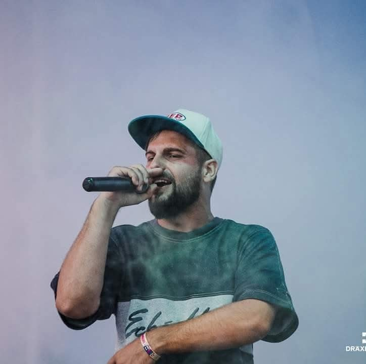

Satu Mare · ROEstinca&DJ Poison
MC + DJ · hip-hop boom-bap · show liveMC + DJ · boom-bap hip-hop · live show
Rime pe beat-uri grele, freestyle și energie de cypher. Peste zece ani pe scenele din nord-vestul României. Rhymes over heavy drums, freestyle and cypher energy. Over ten years on the stages of north-west Romania.

Bio
Estinca & DJ PoisonEstinca este un MC din nord-vestul României, cu rădăcinile în boom-bap-ul anilor ’90. S-a format pe scenele din Satu Mare și Baia Mare și urcă de peste un deceniu pe scenă alături de DJ Poison, cu un show construit pe rime, freestyle și energie de cypher.
În 2014 a câștigat locul 1 la concursul King of the Hills, din cadrul festivalului La Dâmburi din Satu Mare. De atunci a devenit un nume constant pe afișele seriei „Resuscitarea Hip-Hop-ului Românesc” și a cântat alături de nume grele ale hip-hop-ului românesc, precum Cedry2k, Sisu, Stres, Euphoric, SunetSacru, Bocaseca, RomaN, Macanache și Dilimanjaro, dar și cu Chimie (aka Mișu Foarfeca), Lord Lhus (SUA) și El Patrone.
Pe scenă nu e singur: DJ Poison e partenerul lui de show de peste zece ani. El se ocupă de beat-uri și de energia din spatele microfonului, iar împreună duc un set live de boom-bap clasic, cu MC și DJ, ca în anii ’90.
Estinca is an MC from north-west Romania with his roots in 90s boom-bap. He came up on the stages of Satu Mare and Baia Mare and has been performing with DJ Poison for over a decade, in a show built on rhymes, freestyle and cypher energy.
In 2014 he took first place at the King of the Hills contest at La Dâmburi festival in Satu Mare. Since then he has been a regular on the “Resuscitarea Hip-Hop-ului Românesc” (Reviving Romanian Hip-Hop) series and has performed alongside heavyweights of Romanian hip-hop such as Cedry2k, Sisu, Stres, Euphoric, SunetSacru, Bocaseca, RomaN, Macanache and Dilimanjaro, as well as Chimie (aka Mișu Foarfeca), Lord Lhus (USA) and El Patrone.
He never works alone: DJ Poison has been his stage partner for over ten years. He runs the beats and the energy behind the mic, and together they deliver a classic MC-and-DJ boom-bap set, 90s style.
- MC
- Estinca · Estinca Norbert
- DJ
- DJ Poison
- GenGenre
- Hip-hop · boom-bap
- DinFrom
- Satu Mare, RomâniaRomania
- Format liveLive setup
- MC + DJ, set boom-bapMC + DJ, boom-bap set
- PremiiAwards
- Locul 1, King of the Hills, La Dâmburi 20141st place, King of the Hills, La Dâmburi 2014
- LimbăLanguage
- RomânăRomanian
Răspunsuri la 3 întrebăriAnswers to 3 questions
Estinca răspunde la trei întrebări, direct la cameră.Estinca answers three questions, straight to camera.
▶ Pornește video▶ Play videoPe scenăOn stage
din 2014since 2014MomenteHighlights
Locul 1 la King of the Hills, festivalul La Dâmburi, Satu Mare1st place at King of the Hills, La Dâmburi festival, Satu Mare
Resuscitarea Hip-Hop-ului Românesc, alături de Scubi, Marinaru, Jim NTB și ChiricaResuscitarea Hip-Hop-ului Românesc, with Scubi, Marinaru, Jim NTB and Chirica
Resuscitarea Hip-Hop-ului Românesc, Hookah Lounge, Baia MareResuscitarea Hip-Hop-ului Românesc, Hookah Lounge, Baia Mare
Boom Bap Hip Hop Party, The Line: concert Estinca & DJ PoisonBoom Bap Hip Hop Party, The Line: Estinca & DJ Poison live
Alături deAlongside
Festivaluri și serii: La Dâmburi (Satu Mare), Resuscitarea Hip-Hop-ului Românesc, Boom Bap Hip Hop Party.Festivals and series: La Dâmburi (Satu Mare), Resuscitarea Hip-Hop-ului Românesc, Boom Bap Hip Hop Party.
PieseMusic
pe YouTubeon YouTubeVideo
Live · freestyle · declansARTAscultăListen
piese & clipuritracks & videosFoto liveLive photos
apasă pentru măriretap to enlargeFotografii de la La Dâmburi și din cluburile din Satu Mare și Baia Mare. Versiuni la rezoluție mare, la cerere.Photos from La Dâmburi and clubs in Satu Mare and Baia Mare. High-resolution files on request.
Pe afișOn the bill
afișe de concertshow flyersurmăreștefollowEstinca pe Facebook
Anunțuri de concerte, clipuri noi, afișe și tot ce se întâmplă cu Estinca & DJ Poison.Show announcements, new videos, flyers and everything happening with Estinca & DJ Poison.
facebook.com/estincastkpentru concertefor showsBooking
Disponibil pentru festivaluri, cluburi și evenimente hip-hop în toată țara. Show live: Estinca & DJ Poison.Available for festivals, clubs and hip-hop events across Romania. Live show: Estinca & DJ Poison.